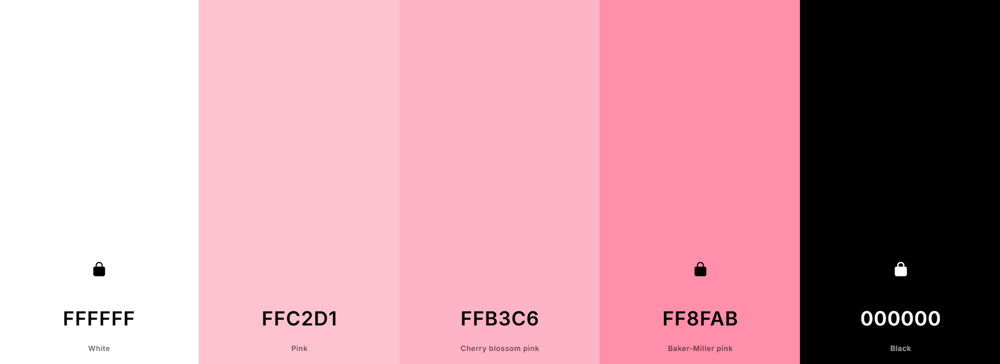

1. Site Name
Site Name: Caffé Rose Online Reason: This name clearly represents the café and emphasizes its online presence, making it easy for customers to find information about the café, its menu, and services. It maintains brand consistency and is simple yet elegant, matching the cozy and inviting nature of Caffé Rose. Optional domain availability: caffe-rose.com or caffe-rose-online.com
2. Site Purpose
The website aims to provide customers with essential information about Caffé Rose, including its menu, ambiance, and services. Visitors can explore the café’s offerings, view high-quality images of the space and products, check opening hours, and find contact details. If implemented, the site will also allow customers to make reservations and place online orders, enhancing convenience and customer engagement.
3. Scenarios
1. What drinks and pastries are available at Caffé Rose, and how much do they cost? Visitors will find a detailed menu section with descriptions and prices of all items. 2. How can I contact Caffé Rose to make a reservation or inquire about catering? The Contact & Location page will provide phone numbers, an email contact form, and reservation options (if applicable).
4. Color Schema:
--primary-color: #ffffff; /* white */ --secondary-color: #FF8FAB; /* pink */ --accent-color: #FFB3C6; /* light pink */ --text-color: #000000; /* black */ --header-footer: #784150; /* dark pink */ --background-color: #FFC2D1; /* lighter pink */
5. Typography
Font Family: 'Space Grotesk', sans-serif; Font Family: 'Afacad Flux', sans-serif;